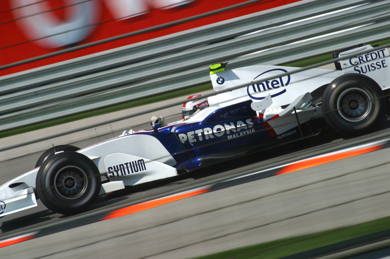
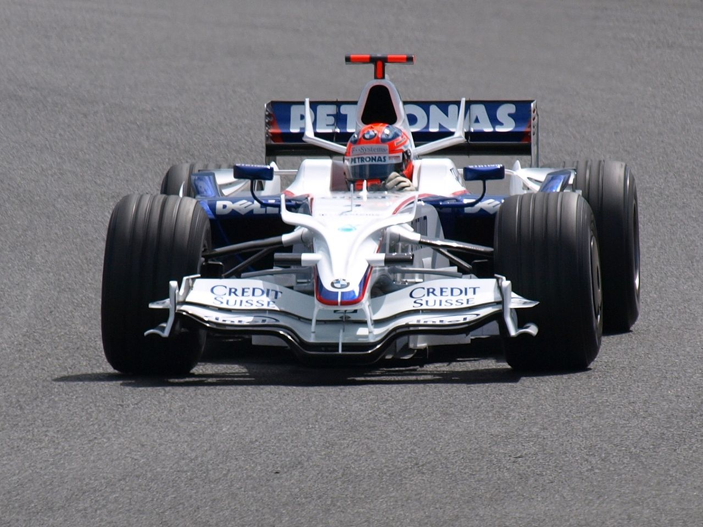
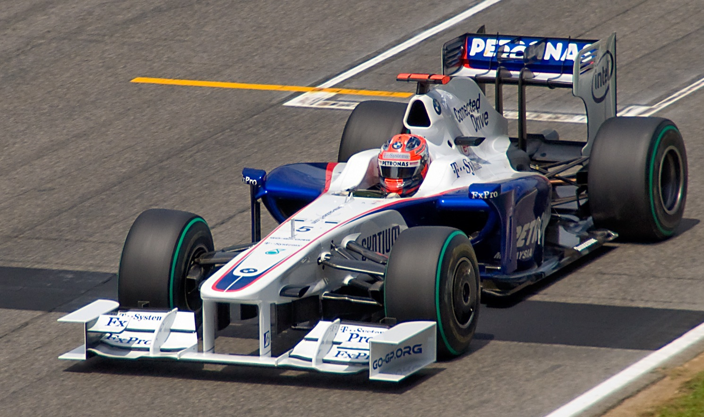

Robert Kubica w barwach zespołu BMW Sauber F1 zadebiutował 25 stycznia na torze Catalunya pod Barceloną, prowadząc przejściowy bolidu C24B z silnikiem V8. „Dzisiaj spełniły się moje marzenia. Wszystko jest dla mnie nowe i ekscytujące. Jestem naprawdę szczęśliwy, że jeżdżę dla zespołu BMW Sauber F1.” – skomentował wówczas swój debiut krakowianin.
Sezon 2006
 Przed Grand Prix Węgier zespół poinformował, że Jacques Villeneuve nie może startować w wyścigu z powodu wypadku, który miał miejsce kilka dni wcześniej na torze Hockenheimring. 6 sierpnia 2006 debiutujący na torze Hungaroring Kubica wystartował do Grand Prix Węgier z dziewiątej pozycji. Na starcie udało mu się awansować na siódmą. Do mety dojechał na 7. miejscu. Po zakończeniu wyścigu bolid Kubicy zważono i okazało się, że był o dwa kilogramy za lekki (598 kilogramów), przez co Kubicę zdyskwalifikowano. Następnego dnia ogłoszono wiadomość, że Jacques Villeneuve rozwiązał kontrakt z zespołem za porozumieniem stron. Robert Kubica jeździł drugim bolidem F1.06 z nr 17 do końca sezonu 2006, a jego obowiązki piątkowego testera przejął inny młody zawodnik, Niemiec Sebastian Vettel. Kubica ukończył swój debiutancki sezon na 16. miejscu w klasyfikacji generalnej. 19 października BMW Sauber potwierdziło Kubicę jako głównego kierowcę w sezonie 2007. Jego partnerem został ponownie Nick Heidfeld.
{kind=link}
Sezon 2007
Po udanym debiucie w Formule 1 w 2006 roku, zespół BMW Sauber w następnym sezonie poczynił kolejne postępy, które przekroczyły najśmielsze oczekiwania. Zespół z Hinwil od pierwszego wyścigu stanowił trzecią siłę w stawce. W sezonie 2007 na jego koncie zapisano 101 punktów. Obaj kierowcy w każdym z 17 weekendów grand prix awansowali do czołowej dziesiątki, a każdej niedzieli przynajmniej jeden zawodnik zdobywał punkty dla zespołu. Robert Kubica jedenaście razy kończył wyścig w punktowanej ósemce. Zdobywając 39 punktów, ukończył mistrzostwa za kolegą z zespołu, na szóstym miejscu.
10 czerwca Robert Kubica wystartował do Grand Prix Kanady z 8. pozycji. Na 25. okrążeniu po wyjeździe z pit stopu jechał na 15. pozycji. Na 27. okrążeniu, podczas próby wyprzedzenia Jarno Trulliego doszło do kontaktu, w rezultacie czego spojler w bolidzie polskiego kierowcy oderwał się i wpadł pod jego koła. Kubica wypadł z toru na prawe pobocze na zakończeniu długiego łuku pomiędzy zakrętem numer 10 a nawrotem Pit Hairpin numer 11 i roztrzaskał swój bolid o betonową barierę przy prędkości około 230 km/h. Po odbiciu, koziołkując, przeleciał na drugą stronę toru i po raz kolejny uderzył w bandę. Na zdjęciach z wypadku widać było wystającą stopę kierowcy. Według badań Fédération Internationale de l’Automobile w trakcie wypadku Kubica przeżył przeciążenie średnie równe 28 G przy wartości szczytowej bliskiej 75 G. Pierwsze doniesienia prasowe informowały, że po wstępnych badaniach stwierdzono, że Kubica ma złamaną nogę, ale jego życie nie jest zagrożone. Później jednak okazało się, że Kubica wyszedł z wypadku bez żadnych poważniejszych obrażeń (Kubica miał jedynie lekkie wstrząśnienie mózgu i skręconą kostkę) i już w poniedziałek 11 czerwca został wypisany ze szpitala. 14 czerwca 2007 stanął przed specjalną komisją FIA mającą stwierdzić czy będzie w stanie jechać w następnym Grand Prix – USA. Decyzja komisji była negatywna. Komisja oceniła, że w przypadku kolejnej kolizji konsekwencje zdrowotne dla Polaka mogłyby okazać się zbyt poważne. Kubicę w GP USA zastąpił Niemiec Sebastian Vettel, dla którego był to debiut w F1. Ostatecznie Vettel zajął 8. miejsce.
Sezon 2008
 W kolejnym sezonie BMW Sauber F1 Team osiągnął kolejny ważny cel: w Kanadzie Robert Kubica wygrał pierwszy wyścig dla ekipy z Monachium i Hinwil. W pełnym niespodzianek sezonie Formuły 1 zespół BMW Sauber F1 był modelowym przykładem równej formy. Jak gdyby dając przykład stereotypowej niemieckiej dokładności i szwajcarskiej precyzji, młoda ekipa nie doświadczyła w sezonie 2008 żadnej usterki technicznej i spośród wszystkich zespołów w stawce pokonała największą liczbę okrążeń w wyścigach oraz odnotowywała najkrótsze czasy postojów w boksie.
{kind=link}
5 kwietnia w kwalifikacjach do GP Bahrajnu zdobył swoje pierwsze w karierze pole position. W wyścigu jednak nie zdołał utrzymać 1. miejsca i ostatecznie ukończył Grand Prix na 3. pozycji. 8 czerwca do GP Kanady, Robert wystartował z 2. miejsca. Podczas bardzo emocjonującego wyścigu, zdołał awansować na 1. miejsce i wygrać swoje pierwsze Grand Prix w karierze. Była to wielka chwila, również ze względu na to, że to na tym torze, rok wcześniej miał okropnie wyglądający wypadek. Sezon 2008 był najbardziej udanym sezonem Roberta w F1, głównie ze względu na bardzo konkurencyjny samochód jakim wtedy dysponował. Stanął w nim na podium aż w siedmiu wyścigach i 3 razy startował z pierwszego rzędu. Zdobywając 75 punktów, ukończył mistrzostwa na 4. miejscu, przegrywając podium w ostatnim wyścigu sezonu.
Sezon 2009
 Kubica był uważany za jednego z faworytów do tytułu mistrzowskiego w sezonie 2009. Wprowadzone zostały w tamtym roku istotne zmiany w regulaminie Mistrzostw Świata. Przede wszystkim powrócono do opon typu slick, umożliwiono korzystanie z systemu KERS i wprowadzono zakaz testów w trakcie sezonu. Życie jednak szybko to zweryfikowało. Bolid jaki BMW przygotowało na sezon, okazał się mało konkurencyjny i Robert zamiast walczyć o podia, musiał walczyć w ogóle o punkty. Tylko raz udało mu się stanąc na podium(2. miejsce w Brazylii). W klasyfikacji generalnej tego sezonu uplasował się na 14. miejscu z dorobkiem 17 punktów. Zarząd BMW zaczął poważnie zastanawiać się nad dalszą obecnością tej marki w F1 i pod koniec lipca podjął decyzję o wycofaniu się z tego sportu z końcem sezonu 2009. Dwa miesiące później Robert Kubica podpisał kontrakt z Renault i stało się jasne, że jego współpraca z zespołem z Hinwil zakończy się po sezonie 2009.
{kind=link}
Źródła: wikipedia.pl, f1wm.pl